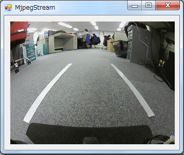
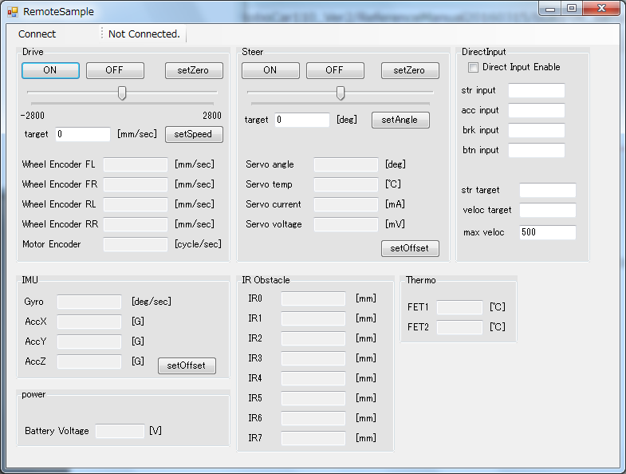
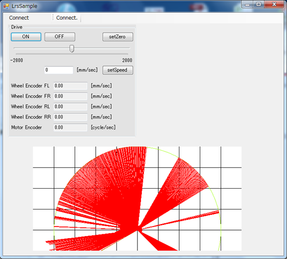

サンプルアプリケーションの機能及び実行方法を説明します。
Linux側のサンプルはライブラリを使用して各種センサ情報の取得及び
操舵角と走行速度の制御を行います。
Windows側のサンプルはLANでRoboCar側のサーバーアプリと通信することで
各種センサ情報の取得及び、操舵角と駆動速度の送信を行います。
駆動用モータとステアリングサーボモータをコンソールからのキー入力で操作します。
$ /home/zmp/proj/RoboCar110_Ver2/samples/SampleDriveControl/SampleDriveControlキー入力によってRoboCarを操作
r:ステアリングサーボを現在角度から右に3度切る(-30deg～30deg)
l:ステアリングサーボを現在角度から左に3度切る(-30deg～30deg)
f:駆動用モータを現在速度から前進方向に(+)100mm/s加速する(-2800mm/s～2800mm/s)
b:駆動用モータを現在速度から後退方向に(-)100mm/s加速する(-2800mm/s～2800mm/s)
s:駆動用モータの速度をゼロ、ステアリングサーボの角度をゼロに設定する
p:駆動用モータの状態をBRAKEにする
o:駆動用モータの状態をOFFにする
g:駆動用モータの状態をONにする
v:駆動用モータの速度を設定する(-2800mm/s～2800mm/s)
例1) "v300"と入力した場合、300mm/secで前進する
例2) "v-50"と入力した場青、(-)50mm/secで後退する
a:ステアリングサーボの角度を設定する(-30.0deg～30.0deg)
例1) "a15.2"と入力した場合、原点から15.2度右へ切る
例2) "a-5.6"と入力した場合、原点から-5.6度左へ切る
t:駆動用モータのトルク設定(0～255)
例1) "t0"と入力した場合、駆動用モータのトルクはゼロになる
例2) "t10"と入力した場合、駆動用モータのトルクは10になる
e:ステアリングサーボ、駆動用モータにゼロを設定して状態をOFFにする(ループから抜ける)※ctrl+cでプログラム終了
各種センサの情報を10ms毎に取得する
$ /home/zmp/proj/RoboCar110_Ver2/samples/SampleGetSensor/SampleGetSensr以下のセンサ情報を10ms間隔で取得して表示します。
ステアリングサーボ情報
・現在位置(deg)
・現在電流(mA)
・現在温度(℃)
・現在電圧(mV)
RoboCar内部センサ
・ジャイロセンサ(deg/sec)
・加速度X軸(G)
・加速度Y軸(G)
・加速度Z軸(G)
・モータエンコーダ(cycle/sec)
・WHEELエンコーダ1(mm/sec)
・WHEELエンコーダ2(mm/sec)
・WHEELエンコーダ3(mm/sec)
・WHEELエンコーダ4(mm/sec)
赤外線測距センサ
・赤外線測距センサ0～7(mm)
電源情報
・バッテリレベル(V)
※ctrl+cでプログラム終了
FrontとRear両方のLaserRangeSensorの値を定期的に取得して、障害物までの距離を計測します。
$ /home/zmp/proj/RoboCar110_Ver2/samples/SampleLRS/SampleLRS起動と同時に計測を開始し、FrontとRearのそれぞれで距離の最大値を出力します。
※ctrl+cでプログラム終了
各種センサ情報を取得してLANで接続したWindowsアプリケーションへ送信します。
Windowsアプリケーションから速度や操舵角を受信してRoboCarの制御を行います。
$ /home/zmp/proj/RoboCar110_Ver2/samples/SampleSocketCommunication/SampleSocketCommunicationWindowsアプリケーションでRoboCarのIPアドレスを指定して接続
各種センサ情報を取得してLANで接続したWindowsアプリケーションへ送信します。
Windowsアプリケーションから速度や操舵角を受信してRoboCarの制御を行います。
$ /home/zmp/proj/RoboCar110_Ver2/samples/SampleSocketCommunication2/SampleSocketCommunicationWindowsアプリケーションでRoboCarのIPアドレスを指定して接続
USBカメラのストリーミングサーバです。
WindowsアプリケーションからIPを指定することで画像を表示出来ます。
ブラウザからRoboCarのIPアドレスにアクセスすることでも画像の表示が可能です。
$ /home/zmp/proj/tool/mjpg-streamer/startStream※ パスワード入力を求められた場合はログインしているアカウントのパスワードを入力して下さい。
※ デフォルトは"zmp"です。
WindowsアプリケーションでRoboCarのIPアドレスを指定して接続
またはブラウザからRoboCarのIPアドレスを指定して接続
http://xxx.xxx.xxx.xxx:8090
カメラから画像を取得し、画面に表示します。
$ /home/zmp/proj/RoboCar110_Ver2/OpenCV/Capture起動と同時に2msおきにカメラから画像を取得し、画面に表示します。
[esc]でプログラムが終了します。
cvSaveImage(fName, frame)を有効化して、画像を保存することも可能です。
カメラから動画を取得し、画面に表示します。
$ /home/zmp/proj/RoboCar110_Ver2/OpenCV/video起動と同時にカメラから動画を取得し、10msおきに画面が更新されます。
動画はAVIファイルで保存されます。
[esc]でプログラムが終了します。
カメラから画像を取得し、画像内の直線を検出し、描画します。
$ /home/zmp/proj/RoboCar110_Ver2/OpenCV/hough起動と同時にカメラから画像を取得します。
cvCanny (gray, gray, 50, 200, 3)画像の輪郭部分を抽出します。
//標準的Hough変換
hough_standard(gray,storage);
//確率的Hough変換
hough_probalistic(gray,storage);標準的（または確率的）hough変換で、画像内の直線を検出し、描画します。
任意のキー入力でプログラムが終了します。
USBカメラの画像を100ms毎に更新します。
RoboCarのジャイロセンサ、加速度センサ(X軸/Y軸/Z軸)、赤外線測距センサ8個の値を受信毎に更新します。
PCにUSBで接続したゲーム用ハンドル及びアクセルから値を取得してRoboCarを操作します。
※ ゲーム用ハンドルはメーカーや型番によって出力される値が異なるのでサンプルプログラムの修正が必要になります。
RoboCarにログインして以下のコマンドで実行ファイルのあるディレクトリに移動します。
$ cd /home/zmp/tools/mjpg-streamer以下のコマンドでカメラサーバーを起動します。
$ ./startStream※ パスワード入力を求められた場合はログインしているアカウントのパスワードを入力して下さい。
※ デフォルトは"zmp"です。
$ /home/zmp/proj/RoboCar110Ver2/samples/SampleSocketCommunication/以下のコマンドで通信アプリを起動します。
$ ./SampleSocketCommunication[スタート]→[すべてのプログラム]→[ZMP]→[RoboCar110_2016]→[ドライビングシミュレータ]を起動
  メニューの[Connect]→[Open]を選択するとIPアドレス入力ウィンドウが表示されます。
RoboCarのIPアドレスを入力して"OK"ボタンを押します
接続に成功するとデータが更新されます。
図：カメラ画像
USBカメラの画像を30fpsで更新します。
※ ネットワーク環境によって遅延にが発生する場合があります。
RoboCarの走行速度を手動で操作します。
ONボタン：駆動用モータ状態をONにします。
OFFボタン：駆動用モータ状態をOFFにします。
setSpeedボタン："target"に入力された値をRoboCarに送信します。
target：RoboCarに送信する値を入力します。(-2800～2800)
スライダー：マウスでスライダーを移動させることでRoboCarに値を送信します。
Wheel Encoder FL：RoboCarから受信した左前輪エンコーダの回転速度を表示します。
Wheel Encoder FR：RoboCarから受信した右前輪エンコーダの回転速度を表示します。
Wheel Encoder RL：RoboCarから受信した左後輪エンコーダの回転速度を表示します。
Wheel Encoder RR：RoboCarから受信した右後輪エンコーダの回転速度を表示します。
Motor Encoder：RoboCarから受信したモーターエンコーダの回転速度を表示します。
※ ゲーム用ハンドルが接続されている場合は”target”の値が30ms毎に更新されます。
RoboCarの操舵角を手動で操作します。
ONボタン：操舵用サーボ状態をONにします。
OFFボタン：操舵用サーボ状態をOFFにします。
setAngleボタン："target"に入力された値をRoboCarに送信します。
setZeroボタン：0度をRoboCarに送信します。
target：RoboCarに送信する値を入力します。(-30度～30度)
スライダー：マウスでスライダーを移動させることでRoboCarに値を送信します。
Servo angle：RoboCarから受信した操舵角を表示します。
Servo temp：RoboCarから受信した操舵用サーボの温度を表示します。
Servo current：RoboCarから受信した操舵用サーボの電流を表示します。
Servo voltage：RoboCarから受信した操舵用サーボの電圧を表示します。
setoffsetボタン："Servo angle"の値をサーボのゼロ位置に設定します。(調整用)
※ ゲーム用ハンドルが接続されている場合は"target"の値が30ms毎に更新されます。
PCにUSBで接続したゲーム用ハンドルの値を表示します。
ゲーム用ハンドルは別途用意する必要があります。
ゲーム用ハンドルはメーカー／型番によって出力値が異なるため、ハンドル操作を行う場合はサンプルプログラムの処理を用意したゲーム用ハンドルの出力値に合わせる必要があります。
※初期設定はLogicoolのDriving force GTを接続する想定としています。
Direct Input Enable:ゲームコントローラからの入力を有効にします。
str input：ゲームコントローラからのステアリング入力値を30ms毎に更新します。
acc input：ゲームコントローラからのアクセル入力値を30ms毎に更新します。
brk input：ゲームコントローラからのブレーキ入力値を30ms毎に更新します。
btn input：ゲームコントローラからのボタン入力値を30ms毎に更新します。
str target:str inputを-30～30[deg]に換算した値を30ms毎に更新します。
veloc target:acc inputとbrk inputから換算した速度を30ms毎に更新します。
max veloc：RoboCarに送信する最大速度を設定します。アクセルからの入力が速度リミットより大きい場合でも速度リミット以上の値は送信されません。速度リミットで設定出来る値は0～2800mm/sです。
RoboCarから受信したジャイロセンサと加速度センサ(X軸,Y軸,Z軸)の値を表示します。
Gyro：ジャイロセンサ値
AccX：X軸加速度センサ値
AccY：Y軸加速度センサ値
AccZ：Z軸加速度センサ値
GyroOffSetボタン：”Gyro”の値をGyroセンサのゼロ位置に設定します。(調整用)
RoboCarから受信した電源情報を表示します。
Battery Voltage：駆動用バッテリの電圧
RoboCarから受信した赤外線測距センサの値を表示します。
障害物が10cm以内にある場合は"0"と表示されます。
障害物が75cm以内に無い場合は"4095"と表示されます。
障害物が10～75cmの間にある場合は障害物までの距離をmm単位で表示します。
RoboCarから受信した温度センサの値を表示します。
FET1：Baseボードに搭載したFET1の温度
FET2：Baseボードに搭載したFET2の温度
RoboCarから受信したレーザレンジセンサの値を表示します。
RoboCar側のアプリケーションを起動
RoboCarにログインして以下のコマンドで実行ファイルのあるディレクトリに移動します。
$ cd /home/zmp/proj/RoboCar110Ver2/samples/SampleSocketCommunication/以下のコマンドで通信アプリを起動します。
$ ./SampleSocketCommunication 
図: レーザレンジセンサ イメージ図
RoboCarから受信した2台のレーザレンジセンサの値を表示します。
RoboCar側のアプリケーションを起動
RoboCarにログインして以下のコマンドで実行ファイルのあるディレクトリに移動します。
$ cd /home/zmp/proj/RoboCar110Ver2/samples/SampleSocketCommunication2/$ ./SampleSocketCommunicationRoboCarのジャイロセンサ、加速度センサ(X軸/Y軸/Z軸)、赤外線測距センサ8個の値を受信毎に更新します。
キーボード入力及びスライダーのマウス操作によりRoboCarを操作します。
RoboCar側のアプリケーションを起動
RoboCarにログインして以下のコマンドで実行ファイルのあるディレクトリに移動します。
$ cd /home/zmp/proj/RoboCar110Ver2/samples/SampleSocketCommunication/$ ./SampleSocketCommunicationRoboCarに接続したゲームコントローラの出力設定を行います。
assing to steering:ステアリング操作をするためのボタンを割り当てます。
Min(Left):"assing to steering"で設定したボタンを操作した時の最小値(左端)を設定します。
Max(Right):"assing to steering"で設定したボタンを操作した時の最大値(右端)を設定します。
assing to accel:アクセル操作をするためのボタンを割り当てます。
Max:"assing to accel"で設定したボタンを操作した時の最大値を設定します。
assing to brake:ブレーキ操作をするためのボタンを割り当てます。
Max:"assing to brake"で設定したボタンを操作した時の最大値を設定します。
RoboCarのIPアドレスを指定してUSBカメラ画像を表示します。
カメラサーバー(mjpgstreamer)を起動
RoboCarにログインして以下のコマンドで実行ファイルのあるディレクトリに移動します。
$ cd /home/zmp/tools/mjpg-streamer$ ./startStreamRcControlライブラリはRoboCarの駆動操作及び各種センサ情報の取得を行います。
レーザレンジセンサの情報は別ライブラリを使用します。
駆動用モータのON/OFF
SetMotorEnableReq(char enable)
駆動用モータのON/OFF(0=OFF, 1=ON, 2=ブレーキ)を設定します。
初期化後に駆動速度を設定する場合は駆動用モータをONにしておく必要があります。
駆動速度の設定
SetDriveSpeed(int speed)
RoboCarの駆動速度を(-2800mm/s～2800mm/s)で設定します。
駆動用モータがONになっていないと駆動速度を設定してもRoboCarは動きません。
操舵用サーボモータのON/OFF
SetServoEnable(int enable)
操舵用サーボモータのON/OFF(0=OFF, 1=ON, 2=ブレーキ)を設定します。
初期化後に操舵角を設定する場合は操舵用サーボモータをONにしておく必要があります。
操舵角の設定
SetSteerAngle(float angle)
RoboCarの操舵角を0.1deg単位(－30.0deg～30.0deg)で設定します。
操舵用サーボモータがONになっていないと操舵角を設定してもRoboCarは動きません。
操舵用サーボモータ情報の取得
GetServoInfoReq(int id, SERVOINFOADR adr, int len, DRIVE_VALUE* value)
操舵用サーボモータの情報取得を行います。
情報取得の要求からサーボモータの応答を受信するまでの遅延が5ms程度あるのでそれより早い周期で情報取得を行っても値が更新されません。
ベースボードから取得するセンサ情報の設定
SetReportFlagReq(char flag)
ベースボードから取得するセンサ情報を設定します。
デフォルトでは全て(ジャイロ、加速度、エンコーダ、障害物センサ、電源情報)の情報を10ms毎に受信してlibRcControl内部保持します。
flag=0：何も受信しない。
flag=1：ジャイロ、加速度、エンコーダ
flag=2：障害物センサ
flag=3：ジャイロ、加速度、エンコーダ、障害物センサ
flag=4：電源情報
flag=5：ジャイロ、加速度、エンコーダ、電源情報
flag=6：障害物センサ、電源情報
flag=7：ジャイロ、加速度、エンコーダ、障害物センサ、電源情報
ジャイロ／加速度／エンコーダの情報の取得
GetSensorInfoReq(SENSORVALUE* value)
ジャイロ／加速度／エンコーダの情報を取得します。
10ms毎に値が更新されるのでそれより早い周期で情報取得を行っても値が更新されません。
情報取得フラグ設定でジャイロ、加速度、エンコーダを取得しない設定にしていると値は更新されません。
障害物センサ情報8個の情報の取得
GetObstacleSensorInfoReq(OBSTACLEVALUE* value)
障害物センサ情報8個の情報を取得します。
10ms毎に値が更新されるのでそれより早い周期で情報取得を行っても値が更新されません。
情報取得フラグで障害物センサの情報を取得しない設定にしていると値は更新されません。
電源情報の取得
GetPowerInfoReq(POWERVALUE* value)
電源情報を取得します。
10ms毎に値が更新されるのでそれより早い周期で情報取得を行っても値が更新されません。
情報取得フラグで電源情報を取得しない設定にしていると値は更新されません。
int main() {
RcControl _RcControl; // RoboCarコントロールクラス
DRIVEVALUE drive; // 操舵用サーボモータ情報構造体
SENSORVALUE sensor; // ジャイロ/加速度/エンコーダ構造体
OBSTACLEVALUE obstacle; // 障害物センサ構造体
POWER_VALUE power; // 電源情報構造体
_RcControl.init(); // 初期化
_RcControl.Start(); // 処理開始
_RcControl.SetReportFlagReq(0x0f); // 情報取得フラグ設定
_RcControl.SetMotorEnableReq(1); // 駆動用モータON
_RcControl.SetServoEnable(1); // 操舵用サーボモータON
for(int i=0; i<100; i++){
usleep(1000**100);
_RcControl.SetDriveSpeed(i**10); // 速度設定
_RcControl.SetSteerAngle((float)i%30); // 操舵角設定
_RcControl.GetServoInfoReq(1, 42, 12, &drive); // 操舵用サーボ情報取得
_RcControl.GetSensorInfoReq(&sensor); // ジャイロ/加速度/エンコーダ情報取得
_RcControl.GetObstacleSensorInfoReq(&obstacle);// 障害物センサ情報取得
_RcControl.GetPowerInfoReq(&power); // 電源情報取得
}
_RcControl.SetDriveSpeed(0); // 速度設定
_RcControl.SetSteerAngle(0); // 操舵角設定
_RcControl.SetMotorEnableReq(0);// 駆動用モータOFF
_RcControl.SetServoEnable(0); // 操舵用サーボモータOFF
_RcControl.Stop(); // 処理の停止
_RcControl.Close(); // リソースの解放
return 0;
}LaserRangeSensorライブラリはレーザレンジセンサ情報の取得を行います。
※レーザレンジセンサはオプションのため別途購入する必要があります。
コールバック関数の登録
SetReceiveHander(this)
コールバック関数の登録を行います。
センサーの出力周期毎にOnReceive()がコールされます。
スタート
Start()
センサ情報の取得を開始します。
センサ情報の取得を開始するには初期化が終了している必要があります。
// サンプルレーザレンジセンサクラス
class SampleLRS :public LaserRangeSensorReceiveHandler {
public:
SampleLRS(){}; // コンストラクタ
virtual ~SampleLRS(){}; // デストラクタ
// 初期化
bool Init() {
bool res = lrs.Init(); // レーザレンジセンサの初期化
return true;
}
void SetReceiveHandler() {
lrs.SetReceiveHander(this); // コールバックハンドラの登録
}
bool Start(){
bool res = lrs.Start(); // 処理開始
return true;
}
bool Stop(){
lrs.Stop(); // 処理終了
return true;
}
private:
// コールバック関数
void OnReceive(){
lrs.GetData(&res); // レーザレンジセンサ情報の取得
}
LaserRangeSensor lrs; // レーザレンジセンサクラス
LrsResult res; // 受信データ構造体
};
int main() {
SampleLRS slrs;// サンプルLRSクラス
system("ipm_serial S 4 0");// ベースボードのストップ
sleep(1);
system("ipm_serial S 4 1");// ベースボードのスタート
signal(SIGINT, funcx);// "Ctrl"+"C"の処理を変更
bool flg = 1;
bool ires = slrs.Init(); // サンプルLRSクラスの初期化
if(ires == false)
flg = 0;
slrs.SetReceiveHandler(); // コールバックハンドラの登録
bool sres = slrs.Start(); // 受信処理開始
if(sres == false)
flg = 0;
while (flg) {
usleep(3000);
}
slrs.Stop(); // 受信処理終了
return 0;
}
void funcx(int sig) {
system("ipm_serial S 4 0"); // ベースボードのストップ
sleep(1);
system("ipm_serial S 4 1"); // ベースボードのスタート
signal(SIGINT, SIG_DFL); // "Ctrl"+"C"の処理をデフォルトに戻す
raise(SIGINT); // "Ctrl"+"C"を発生
}